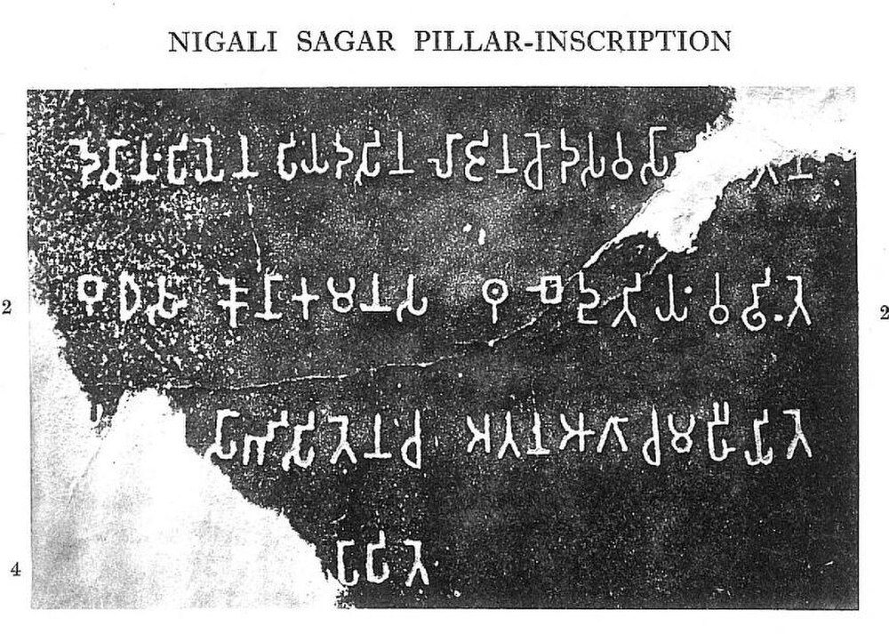
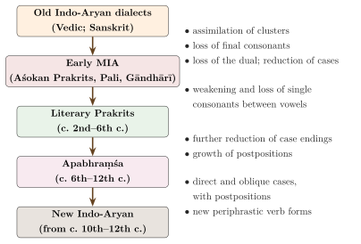

Chapter 9: Pali, the Prakrits and Apabhraṃśa: The Middle Indo-Aryan Traditions¶
saṃskṛtaṃ nāma daivī vāg anvākhyātā maharṣibhiḥ
tadbhavas tatsamo deśīty anekaḥ prākṛtakramaḥ
Sanskrit is the divine speech, explained by the great sages. Prakrit usage is of several kinds: derived from it, identical with it, and regional.
— Daṇḍin, Kāvyādarśa 1.33
9.1 Introduction¶
For most of Indian history, most people did not speak Sanskrit. They spoke the languages that linguists call Middle Indo-Aryan (MIA): the Prakrits (prākṛta, “natural, ordinary”), of which Pali is one, and later the Apabhraṃśa languages, from which the modern Indo-Aryan languages developed. These languages have their own literatures, among them the canon of Theravāda Buddhism, the scriptures of the Jains, a rich lyric poetry and much of Indian drama, and their own grammatical traditions. They also form the bulk of the earliest Indian inscriptions, including those of Aśoka (Masica 1991; Salomon 1998). See Table 9.1.
| Stage | Period | Languages |
|---|---|---|
| Old Indo-Aryan | c. 1500–500 BCE (Vedic); later as a learned language | Vedic Sanskrit; Classical Sanskrit |
| Early Middle Indo-Aryan | c. 3rd c. BCE – 2nd c. CE | Aśokan and other early inscriptional Prakrits; Pali; Gāndhārī |
| Middle Middle Indo-Aryan | c. 2nd–6th c. CE | Literary Prakrits: Mahārāṣṭrī, Śaurasenī, Māgadhī, Ardhamāgadhī; Paiśācī (known only from grammarians) |
| Late Middle Indo-Aryan | c. 6th–12th c. | Apabhraṃśa; Avahaṭṭha |
| New Indo-Aryan | from c. 10th–12th c. | Hindi–Urdu, Bengali, Marathi, Gujarati, Punjabi, Odia, Assamese, Sindhi, Kashmiri, Nepali, Sinhala and others |
9.2 What Is a Prakrit?¶
The word prākṛta can be understood in two ways. Indian grammarians derived it from prakṛti “source, base”, and took the base to be Sanskrit: Hemacandra explains that Prakrit is “what arises from, or comes from” Sanskrit, which is its prakṛti. On this view Prakrits are Sanskrit transformed, and the grammarians accordingly describe them by rules that convert Sanskrit forms into Prakrit ones. The word can also mean “natural, common”, and some Prakrit writers, especially Jain authors, took Prakrit to be the natural speech of the people, of which Sanskrit is a refined form.
Modern historical linguistics takes a third view. The Prakrits do not descend from Classical Sanskrit as described by Pāṇini; they descend from spoken Old Indo-Aryan dialects related to, but not identical with, the language of the Vedas and of Pāṇini. Some Prakrit forms preserve features that Sanskrit had lost (Masica 1991; Oberlies 2001). Daṇḍin’s threefold classification, quoted at the head of this chapter, remains useful for vocabulary: tatsama words identical with Sanskrit, tadbhava words derived from Old Indo-Aryan through regular sound change, and deśī words of other origin, many of them from Dravidian or Munda sources.
9.3 Pali¶
Pali is the language of the Theravāda Buddhist canon, the Tipiṭaka (“three baskets”): the Vinaya (monastic discipline), the Sutta (discourses) and the Abhidhamma (systematic doctrine). According to the Sri Lankan chronicles, the canon was written down in Sri Lanka in the 1st century BCE, after centuries of oral transmission.
9.3.1 Name and origin¶
The word pāli originally meant “a line, a text”, specifically the canonical text as opposed to the commentary; its use as the name of a language is late. The Theravāda tradition identifies the language with Māgadhī, the language of Magadha in which the Buddha was believed to have taught. Linguistic study shows that Pali is not the Māgadhī known from inscriptions and grammarians: it shares many features with the western inscriptional Prakrits and shows traces of an eastern substratum, as one would expect of a literary language formed from the transmission of teachings across regions (Norman 1983; Oberlies 2001).
9.3.2 Sound changes¶
Pali differs from Sanskrit less in its grammar than in its sounds, and the differences are regular enough that a reader of Sanskrit soon learns to see the Sanskrit word behind the Pali one (Table 9.2).
| Change | Sanskrit | Pali |
|---|---|---|
| Assimilation of consonant clusters | dharma, karma, putra | dhamma, kamma, putta |
| Cluster with r assimilated, aspiration kept | artha | attha |
| Long vowel shortened before a double consonant | sūtra | sutta |
| Cluster rv > bb | nirvāṇa | nibbāna |
| kṣ > kkh (or cch) | bhikṣu, kṣetra | bhikkhu, khetta |
| Sibilants merged as s | śānti, puruṣa | santi, purisa |
| Final -aḥ > -o | puruṣaḥ | puriso |
| Vowel ṛ replaced by a, i or u | ṛṣi, vṛkṣa | isi, rukkha |
| Case | Skt. sg. | Pali sg. | Skt. pl. | Pali pl. |
|---|---|---|---|---|
| Nominative | devaḥ | devo | devāḥ | devā |
| Accusative | devam | devaṃ | devān | deve |
| Instrumental | devena | devena | devaiḥ | devehi, devebhi |
| Dative | devāya | devāya, devassa | devebhyaḥ | devānaṃ |
| Ablative | devāt | devā, devasmā, devamhā | devebhyaḥ | devehi, devebhi |
| Genitive | devasya | devassa | devānām | devānaṃ |
| Locative | deve | deve, devasmiṃ, devamhi | deveṣu | devesu |
Table 9.3 shows the typical Middle Indo-Aryan simplifications: the dative is largely replaced by the genitive, the dual is lost, and pronominal endings (-smā, -smiṃ) spread to nouns.
The first verse of the Dhammapada, one of the best-known texts of the Pali canon, shows many of these features at once:
Dhammapada 1
manopubbaṅgamā dhammā manoseṭṭhā manomayā
manasā ce paduṭṭhena bhāsati vā karoti vā
tato naṃ dukkham anveti cakkaṃ va vahato padaṃ
“Mental states are preceded by mind, have mind as their chief, are made by mind. If one speaks or acts with a corrupted mind, suffering follows one, as the wheel follows the foot of the ox that draws the cart.”
Compared with Sanskrit, dhammā stands for dharmāḥ, -pubbaṅgamā for -pūrvaṃgamāḥ (with rv > bb and the vowel shortened before the double consonant), seṭṭhā for śreṣṭhāḥ, paduṭṭhena for praduṣṭena, dukkham for duḥkham and cakkaṃ for cakram. A reader who knows Sanskrit can follow the verse almost word for word, which is one reason why Pali has always been studied alongside Sanskrit in India and Sri Lanka.
9.3.3 Pali grammars¶
A Pali grammatical tradition developed in Sri Lanka and Burma, modelled partly on Sanskrit grammars, especially the Kātantra and Pāṇini, but adapted to Pali. The earliest surviving Pali grammar, the Kaccāyanavyākaraṇa, is attributed by tradition to the Buddha’s disciple Kaccāna but is certainly much later (perhaps 6th–8th century; the date is disputed). In 12th-century Sri Lanka Moggallāna wrote a fresh and more systematic grammar, the Saddalakkhaṇa, drawing on the Cāndra grammar of Sanskrit, and in 1154 Aggavaṃsa completed at Pagan in Burma the Saddanīti, the most comprehensive of all Pali grammars. Buddhappiya’s Rūpasiddhi (perhaps 13th century) reworked Kaccāyana for students (Hinüber 1996).
9.3.4 Pali literature beyond the canon¶
Pali literature did not end with the canon. The Milindapañha, a layered work of perhaps the 1st century BCE to the 2nd century CE, presents the monk Nāgasena answering the questions of King Milinda, the Indo-Greek Menander. Sri Lanka produced chronicles of its own history, the Dīpavaṃsa (4th century) and the Mahāvaṃsa ascribed to Mahānāma (5th–6th century). Above all, Buddhaghosa in the 5th century gave Theravāda its classic manual of doctrine and meditation, the Visuddhimagga, and with his successors wrote the commentaries (aṭṭhakathā) through which the canon has been read ever since, including the prose frame of the Jātaka stories. Anuruddha’s Abhidhammatthasaṅgaha (c. 10th–12th century) became the standard short manual of Abhidhamma (Norman 1983; Hinüber 1996).
9.4 The Inscriptional Prakrits¶
The edicts of Aśoka (r. c. 268–232 BCE) are the earliest securely dated Indian texts (Figure 9.1). They are written in several dialects of Prakrit: an eastern one, close to the language of the Mauryan court at Pāṭaliputra, adapted to local speech in different regions, so that the versions at Girnar in the west and at Shahbazgarhi and Mansehra in the north-west show western and north-western features (Salomon 1998). Even the king’s titles show the difference: in the eastern versions the epithet “Beloved of the Gods” ends in -e (devānaṃpiye) and “king” is lājā, with l for r, while the Girnar version has the ending -o and the form rājā. The features that the grammarians later attributed to Māgadhī can thus already be seen in the eastern inscriptions of the 3rd century BCE. For several centuries afterwards almost all Indian inscriptions were in Prakrit; Sanskrit began to be used in inscriptions only from around the turn of the Common Era (the Junāgaḍh inscription of Rudradāman, 150 CE, is an early long example), and became the dominant inscriptional language from the 4th century (Pollock 2006). In the north-west a distinct Prakrit, Gāndhārī, written in Kharoṣṭhī script, was the language of administration and of an important Buddhist literature, recovered in recent decades from manuscripts found in Afghanistan and Pakistan (Chapter 12).


9.4.1 Sri Lanka and the Maldives¶
Indo-Aryan speech was carried to Sri Lanka in the 1st millennium BCE. The earliest inscriptions of the island, short Buddhist donative records in Brāhmī from about the 3rd–2nd centuries BCE, are written in a Prakrit that developed into Sinhala; Dhivehi, the language of the Maldives, is closely related. These “insular” Indo-Aryan languages developed in isolation from the mainland and in contact with Tamil, and they show distinctive changes such as the loss of aspiration. Pali, the language of the island’s Buddhist scriptures, coexisted with them as a learned language, much as Sanskrit coexisted with the Prakrits on the mainland.
Sinhala also acquired a grammatical tradition of its own. Its classic is the Sidat Saṅgarāva, a grammar of the literary language (Eḷu or Hela) composed in the 13th century and traditionally attributed to a monk named Vēdēha. It is written in Sinhala and applies to it the categories of the Pali and Sanskrit grammars studied in the island’s monasteries, treating in turn the letters, their combination, nouns and their cases, and verbs. As with the Dravidian grammars (Chapter 11), a borrowed framework had to be adapted to a language that had moved far from its ancestor and had long been in contact with Tamil. The Sidat Saṅgarāva remained the authority for correct literary Sinhala into the modern period, and it was translated into English by James De Alwis in 1852.
9.5 Buddhist Languages: Gāndhārī and Buddhist Hybrid Sanskrit¶
The Buddha is reported in the Pali Vinaya to have told his monks to learn his teaching “in their own language” (sakāya niruttiyā), refusing a proposal to put it into Vedic verse; the phrase has been interpreted both as “in the monk’s own dialect” and as “in the Buddha’s own language”, but on either reading early Buddhism did not treat any one language as sacred. Buddhist texts were accordingly transmitted in several Middle Indo-Aryan languages. Pali is the one whose canon survives complete. In the north-west the texts were transmitted in Gāndhārī, written in Kharoṣṭhī; the discovery since the 1990s of birch-bark manuscripts in Gāndhārī, some dated by radiocarbon to the 1st century CE or earlier, has transformed the study of early Buddhist literature.
From around the beginning of the Common Era, Buddhist schools of northern India, and the Mahāyāna, increasingly adopted Sanskrit. Many texts were composed in, or converted into, a language that mixes Sanskrit and Middle Indo-Aryan forms, which Franklin Edgerton called “Buddhist Hybrid Sanskrit” and described in a grammar and dictionary (Edgerton 1953). The gradual Sanskritisation of Buddhist and later of Jain writing is part of the larger movement by which Sanskrit became, in the first millennium CE, the shared language of learning and political expression across South Asia (Pollock 2006).
9.6 Jain Prakrit Literature¶
The Jains preserved the largest body of Prakrit literature. The Śvetāmbara canon, in Ardhamāgadhī, comprises the eleven surviving Aṅgas and numerous further texts, with Prakrit commentaries (niryukti, bhāṣya, cūrṇi) and later Sanskrit ones. The Digambaras regard the old canon as lost and hold as authoritative works in Jain Śaurasenī, such as the Ṣaṭkhaṇḍāgama and the writings of Kundakunda. Jain authors also wrote a vast secular and narrative literature in Mahārāṣṭrī and Apabhraṃśa: romances, epics, story collections and didactic works. It was largely in the service of this literature that Jain scholars such as Hemacandra wrote grammars, lexicons and works on metre covering Prakrit and Apabhraṃśa alongside Sanskrit.
9.7 The Literary Prakrits¶
9.7.1 Prakrit in Sanskrit drama¶
In Sanskrit drama, by the convention set out in the Nāṭyaśāstra, characters speak different languages according to their gender and status. Kings, Brahmins and other high-status men speak Sanskrit; women, children and most other characters speak Prakrit. The convention mirrored, and reinforced, a social hierarchy in which Sanskrit was the language of high-status men (Table 9.4).
| Prakrit | Region named | Use |
|---|---|---|
| Śaurasenī | Śūrasena (Mathurā) | The main prose Prakrit of drama, spoken by heroines and other respectable characters; also the language of Digambara Jain scripture |
| Mahārāṣṭrī | Mahārāṣṭra | The Prakrit of lyric poetry and of songs in drama; Hāla’s anthology; Prakrit epics |
| Māgadhī | Magadha | Spoken by low-status characters in drama |
| Ardhamāgadhī | “half-Māgadhī” | The language of the Śvetāmbara Jain canon |
| Paiśācī | “of the Piśācas” | Language of Guṇāḍhya’s lost Bṛhatkathā; known only from grammarians and quotations |
9.7.2 Mahārāṣṭrī¶
Mahārāṣṭrī was considered the Prakrit par excellence for poetry. Its most famous work is the Gāhāsattasaī (Sanskrit Gāthāsaptaśatī), “Seven Hundred Verses”, an anthology of short love poems attributed to the Sātavāhana king Hāla. The anthology probably took shape in the early centuries CE, with later additions; its verses, many spoken in the voices of village women, are among the finest lyrics of ancient India. Mahārāṣṭrī is characterised by the loss of single consonants between vowels: Sanskrit nagara “town” becomes ṇaara, loka “world” becomes loa.
Prakrit poetry was not merely a lower register of Sanskrit (Ollett 2017). Sanskrit poeticians themselves, from Ānandavardhana onwards, quoted Prakrit stanzas from Hāla’s anthology as model examples of suggestion (dhvani), and Prakrit court epics such as Pravarasena’s Setubandha (on the building of Rāma’s bridge, 5th century) and Vākpati’s Gauḍavaho (8th century) show that Mahārāṣṭrī was a prestigious literary medium. Rājaśekhara’s Karpūramañjarī (c. 900) is a whole play in Prakrit. The ideal of the poet who commands both Sanskrit and Prakrit, and often Apabhraṃśa and Paiśācī as well, was widespread in the courts of the late 1st millennium.
9.7.3 Śaurasenī¶
Śaurasenī keeps a voiced form of dental stops between vowels where Mahārāṣṭrī loses them: Sanskrit gacchati “goes” becomes Śaurasenī gacchadi but Mahārāṣṭrī gacchaï. The western New Indo-Aryan languages, including the ancestor of Hindi, are often traced to the Apabhraṃśa of the Śaurasenī region, but the descent of the modern languages from particular literary Prakrits is a simplification (Masica 1991).
9.7.4 Māgadhī and Ardhamāgadhī¶
Māgadhī, as described by the grammarians and used in drama, has ś for every sibilant, l for r, and the nominative singular ending -e instead of -o: Sanskrit rājā “king” becomes lājā, and puruṣaḥ “man” becomes puliśe. Ardhamāgadhī, the language of the Śvetāmbara Jain canon (the Āgamas), shares the ending -e but keeps r and s. The Jain canon was fixed at councils, the last of which, at Valabhī, is traditionally dated to the 5th century CE.
9.8 Prakrit Sound Changes¶
Table 9.5 lists the characteristic sound changes from Old to Middle Indo-Aryan, and Figure 9.2 places them in the longer history of Indo-Aryan.
| Process | Sanskrit | Prakrit |
|---|---|---|
| Assimilation of clusters | dharma, hasta, bhakta | dhamma, hattha, bhatta |
| Loss of single stops between vowels (Mahārāṣṭrī) | nagara, loka | ṇaara, loa |
| Voicing of t between vowels (Śaurasenī) | gacchati | gacchadi |
| Aspirated stops between vowels reduced to h | mukha, kathā | muha, kahā |
| Initial and medial n > ṇ | nagara | ṇaara |
| Sibilants merged | śaśin | sasi (Māgadhī śaśi) |
| r > l (Māgadhī) | rājā | lājā |
| ṛ > a, i, u | ghṛta, ṛṣi, vṛkṣa | ghaa, isi, rukkha |
| kṣ > kkh or cch | kṣetra | khetta, chetta |

9.9 The Prakrit Grammarians¶
The oldest surviving Prakrit grammar is Vararuci’s Prākṛtaprakāśa, perhaps of the 4th–6th century, with a commentary by Bhāmaha. It takes Mahārāṣṭrī as the Prakrit proper and treats Paiśācī, Māgadhī and Śaurasenī in short chapters of their own. Hemacandra’s eighth chapter (12th century) is the fullest of the grammars and the only one to describe Apabhraṃśa at length, with the many quoted verses mentioned below; Trivikrama’s Prākṛtaśabdānuśāsana (13th century) follows it closely. The later works, such as the Prakrit section of Kramadīśvara’s Saṃkṣiptasāra (c. 13th century), Lakṣmīdhara’s Ṣaḍbhāṣācandrikā on “six languages” (16th century) and Mārkaṇḍeya’s Prākṛtasarvasva (17th century), which represents an eastern school, were written for poets and readers who used the Prakrits as literary languages, above all in drama, long after they had ceased to be spoken.
The Prakrit grammarians describe their languages by stating how a Sanskrit form is transformed into the corresponding Prakrit one. Their rules are therefore systematic correspondences between two languages, not historical sound laws; but they record, accurately and in detail, the regular relationships that 19th-century historical linguists later explained as the results of sound change. Richard Pischel’s Grammatik der Prakrit-Sprachen (1900) built on them and remains the standard reference (Pischel 1900).
9.10 Apabhraṃśa¶
Apabhraṃśa (“falling away”) was originally a grammarians’ term for any deviant form (Patañjali uses it for incorrect words, Chapter 7). From about the 6th century it became the name of a literary language, or group of languages, representing the last stage of Middle Indo-Aryan. Far from being a corruption, it was the vehicle of a large literature, especially among the Jains (Masica 1991). Svayambhū’s Paümacariu (9th century) is a Jain Rāmāyaṇa and Puṣpadanta’s Mahāpurāṇa (10th century) a Jain universal history, while Dhanapāla’s Bhavisattakaha (10th century) and Kanakāmara’s Karakaṇḍacariu (11th century) are narrative poems. Not all of it is Jain. The Saṃdeśarāsaka, a messenger poem of perhaps the 12th century, is the work of a Muslim poet of the north-west, Abdul Rahmān (Addahamāṇa), and the love and heroic verses that Hemacandra quotes as examples in his grammar come from a popular poetry that is otherwise lost.
The Kuvalayamālā of Uddyotanasūri (779 CE), a Prakrit romance, contains a famous passage in which merchants from eighteen regions of India are each characterised by a few words of their own speech, a rare early record of regional languages. The Buddhist Caryāpadas of eastern India, of uncertain date (perhaps 10th–12th century), are claimed as the earliest literature of Bengali, Assamese, Odia and Maithili.
9.10.1 From Apabhraṃśa to the modern languages¶
Apabhraṃśa shows many of the features of the modern Indo-Aryan languages: case endings reduced to a few, the growth of postpositions to express case relations, new verbal constructions built on participles, and new pronouns. The New Indo-Aryan languages emerged from the regional speech of this period, and their earliest texts appear from around the 10th to the 13th centuries. Their literatures are surveyed in Volume 8 of this series, Kāvya Kalpalatā.
One regular change in the passage to the modern languages can be followed across all three stages (Table 9.6). Middle Indo-Aryan assimilated the consonant clusters of Old Indo-Aryan into double consonants; New Indo-Aryan then simplified the double consonant and, in compensation, lengthened the vowel before it. Many of the commonest words of Hindi are inherited in this way (tadbhava words), while their Sanskrit originals were later borrowed again as learned words (tatsama), so that Hindi has both kām “work” and karma “action, karma”, both hāth “hand” and hasta in learned compounds.
| Sanskrit | Pali / Prakrit | Hindi | Meaning |
|---|---|---|---|
| hasta | hattha | hāth | hand |
| karma | kamma | kām | work |
| sapta | satta | sāt | seven |
| dugdha | duddha | dūdh | milk |
| agni | aggi | āg | fire |
| karṇa | kaṇṇa | kān | ear |
9.11 The First Descriptions of the New Indo-Aryan Languages¶
The modern Indo-Aryan languages were written long before anyone wrote a grammar of them, and their first descriptions came by roundabout routes. The earliest is a by-product of teaching Sanskrit. Paṇḍita Dāmodara’s Uktivyaktiprakaraṇa, written in the 12th century at the court of the Gāhaḍavāla king Govindacandra, whose capitals were Kanauj and Vārāṇasī, teaches Sanskrit to speakers of the local vernacular, an early form of the language of Kosala (Old Awadhi), by setting vernacular sentences beside their Sanskrit equivalents and explaining Sanskrit constructions through them. It is not a grammar of the vernacular, but in order to teach Sanskrit it has to show how the vernacular expresses case, tense and voice, and so it is the oldest systematic record of an early Hindi dialect. Muni Jinavijaya edited it in 1953 with a linguistic study by Suniti Kumar Chatterji. Later manuals of the same kind, called auktika after this text, taught Sanskrit through Old Gujarati and other vernaculars.
Other early records come from the margins of other sciences. Sarvānanda’s Bengali glosses on the Amarakośa (1159; Section 4.8) are among the earliest evidence for Bengali words, and the Prākṛtapaiṅgala (Section 3.6) preserves verses in the late Apabhraṃśa from which the vernaculars were emerging. Persian scholarship supplied the first grammar of Braj, the literary language of north Indian poetry, in Mīrzā Khān’s Tuḥfat al-Hind (c. 1675), which is described, with the Persian–Hindavi glossaries, in Chapter 13.
European missionaries began to write grammars of the coastal languages in the 17th century. The English Jesuit Thomas Stephens (d. 1619), who worked in Goa, wrote a grammar of Konkani in Portuguese, the Arte da lingoa Canarim, printed in 1640; he is also remembered for a long Christian poem in Marathi, the Kristapurāṇa. The Portuguese Augustinian Manoel da Assumpção published at Lisbon in 1743 a Vocabulario em idioma Bengalla, e Portuguez, with a short grammar of Bengali, and Dutch and German grammars of Hindustani appeared in the same decades (Section 13.6). These works were written for missionaries and traders, in Roman script and on Latin models, and Indian scholars long ignored them; but they are the first grammars of these languages in the European sense, and they precede by a century or more the colonial grammars, such as N. B. Halhed’s Grammar of the Bengal Language (1778), that are often treated as the beginning of the subject. Marathi, Gujarati, Odia and most other languages of the region received their first printed grammars only in the 19th century, from missionaries, colonial officials and, increasingly, Indian scholars (Chapter 14).
9.12 Modern Study¶
The modern study of Pali and the Prakrits began in the 19th century. The Pali Text Society, founded in London by T. W. Rhys Davids in 1881, edited and translated the Pali canon and its commentaries, while in Sri Lanka, Burma and Thailand the canon continued to be studied and recited in the traditional way. Richard Pischel’s grammar of the Prakrits (1900) gathered the evidence of the grammarians, the dramas and the Jain texts (Pischel 1900), and Wilhelm Geiger’s work on Pali and on the Sri Lankan chronicles set the study of Pali on a philological footing. More recent work has emphasised the variety of Middle Indo-Aryan, its inscriptional record and its relation to the modern languages (Oberlies 2001; Norman 1983; Masica 1991). In 2024 the Government of India added Pali and Prakrit, together with Marathi, Bengali and Assamese, to its list of “classical languages”.
9.13 The Place of Middle Indo-Aryan¶
The Middle Indo-Aryan languages fill the two thousand years between the Vedic hymns and the modern languages, and without them the history of Indo-Aryan could not be written. They carry two of the great scriptural canons of India, the Theravāda canon in Pali and the Jain canon in Ardhamāgadhī and Śaurasenī. They are the languages of a major literature, from Prakrit lyric to Apabhraṃśa narrative and the Prakrit passages of drama, and of almost all early Indian inscriptions, including every edict of Aśoka except the Greek and Aramaic versions in the north-west. And the long coexistence of Sanskrit and Prakrit, with its conventions about who spoke which, is some of the best evidence we have for the social history of language in India (Deshpande 1993; Ollett 2017).
Further Reading¶
-
Pischel, Richard. 1900. Grammatik Der Prakrit-Sprachen. Karl J. Trübner.. — The standard grammar of the Prakrits.
-
Oberlies, Thomas. 2001. Pāli: A Grammar of the Language of the Theravāda Tipiṭaka. Walter de Gruyter.. — A modern grammar of Pali.
-
Norman, K. R. 1983. Pāli Literature. A History of Indian Literature, 7.2. Otto Harrassowitz.. — A history of Pali literature.
-
Hinüber, Oskar von. 1996. A Handbook of Pāli Literature. Walter de Gruyter.. — A handbook of Pali literature, including the grammarians.
-
Ollett, Andrew. 2017. Language of the Snakes: Prakrit, Sanskrit, and the Language Order of Premodern India. University of California Press.. — On Prakrit as a literary language and its place beside Sanskrit.
-
Edgerton, Franklin. 1953. Buddhist Hybrid Sanskrit Grammar and Dictionary. 2 vols. Yale University Press.. — On Buddhist Hybrid Sanskrit.
-
Deshpande, Madhav M. 1993. Sanskrit and Prakrit: Sociolinguistic Issues. Motilal Banarsidass.. — On the sociolinguistics of Sanskrit and Prakrit.